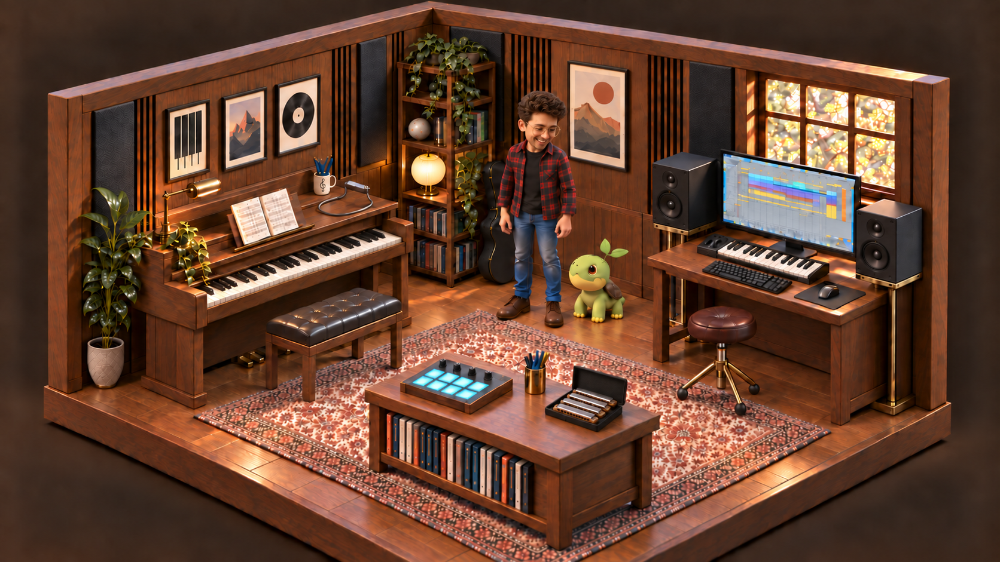

St. Bart’s Players · 2026
Bright Star
The 14Y Theatre
- Oct 27–30
- Oct 31
- &
- Nov 1
Mr. Hoosier New York City
Broadway, bluegrass,
and everything in between.
Singer, multi-instrumentalist, and actor-musician. Vocals, guitar, harmonica, piano, and a set that follows the energy of the room.

The live playlist
Live vocals, familiar songs, and a little room for the unexpected. Pick a performance from the playlist and make yourself at home.
Choose a performance. Stay for the playlist.
Upcoming events
St. Bart’s Players · 2026
The 14Y Theatre
The live sound
VOCALS / STRINGS / KEYSA storyteller at the microphone, with room for the band to take a turn. Roots and Americana sit alongside classic rock, the Great American Songbook, pop, funk, soul, and musical theatre.
The story, the melody, and a connection with the room.
Acoustic warmth, rhythm, and something to lean into.
A little grit, an answering phrase, a change of color.
Songbook favorites, theatre, and full-band possibilities.
More ways into the music
Andrew’s iPod
Recordings, arrangements, and vocals from my music collection. Pick a track and have a listen.

The Session Room
Play piano, build a beat, or learn a lick with the band. No account or experience needed.
Enter the Music Lab
About Andrew / Mr. Hoosier
Andrew Wolverton is a Brooklyn-based singer, actor-musician, and frontman who performs as Mr. Hoosier. On vocals, guitar, harmonica, and piano, he moves from bluegrass and folk to classic rock, the Great American Songbook, soul, and musical theatre. He fronts Rooftop Ramblers and frequently plays at jams across Brooklyn and Manhattan, bringing that collaborative, in-the-moment approach to his live sets.
His theatre background is part of the music, not a separate chapter. With acting training at Indiana University and vocal study through the Singing Hoosiers, his stage credits include Gabe in Next to Normal at Towle Theater, and Chip Tolentino in The 25th Annual Putnam County Spelling Bee and Rooster Hannigan in Annie at Civic Theatre of Greater Lafayette. His New York work includes Pippin and The Laramie Project with St. Bart’s Players, and cabarets including Bodega Idol and In Bed Before 10 at The Reverie Room. He next appears in Bright Star with St. Bart’s Players.
Andrew also knows what it takes to build a show. He served as associate producer on Kathleen Turner: Finding My Voice with Davenport Theatrical Enterprises, directed theatre, and taught theatre and choir. Since 2018, his freelance audio work has included editing and arranging hundreds of tracks, mashups, and medleys for choreographers and live performances. That experience informs how he thinks about a set: the phrasing, the pacing, and when to leave room for another musician.
Making music accessible matters to him beyond his own performances. He founded Discovery Sound Garden to expand access to music creation and has supported student musicians through years of work with the Singing Hoosiers Alumni Council. He holds a B.A. in Theatre and Drama from Indiana University and a Master of Arts Management from Carnegie Mellon University. Whether he is onstage, in a jam, or building something with other artists, he comes back to the same thing: a good song and people making it their own.
Let’s make something liveStay in the loop
Occasional emails with performance dates, new videos, and music updates. For clips and show updates between visits, follow @mr.hoosiermusic on Instagram.
Sign up for occasional performance dates, new videos, and release updates.
Booking
Tell me the date, location, event type, expected set length, and what kind of room you are programming. You can book Andrew directly, ask about Rooftop Ramblers, or tell me you are not sure which setup fits yet.